In Run Basic InaSAFE we learned how to run a flood analysis on population and buildings, adjust the flood impact default settings and analyse impact summary report, and change analysis threshold. We also learned how to save our work and generate a pdf of the analysis results. In this exercise we will learn more techniques such as how to run InaSAFE with aggregation data to produce reports broken down by districts or regions. We will also learn how to download data using the OpenStreetMap downloader and how to run InaSAFE analysis on the downloaded building polygons and roads. Last but not least, we will learn how to define the analysis area.
To improve the participant’s understanding of additional InaSAFE function and features. By the end of this exercise, participants will be able to:
Define keywords using the InaSAFE keyword wizard
Run InaSAFE with aggregation data
Use the OpenStreetMap Downloader to download data for InaSAFE
Set the InaSAFE analysis area using the InaSAFE analysis area tool.
The data for this exercise are available in Run Intermediate InaSAFE.zip which can be downloaded from InaSAFE Training Data. We will use the following data:
Jakarta Flood 18113 WGS84
Jakarta District Boundary WGS84
Jakarta Subdistrict Boundary WGS84
Jakarta Population WGS84
Click Open and select DKI Jakarta Intermediate.qgs.
There is a notification to save the current project, choose
whether to save your current work or discard your current work. Once DKI_Jakarta_Intermediate is opened, you will see the following:
Next, add Jakarta Flood 18113 WGS84 data from Run Intermediate InaSAFE > DKI Jakarta > 01 Hazard Data. This is the flood hazard data
for Jakarta from an actual flood event. During Jakarta floods in January
2013, the provincial disaster manager collected information about the flood,
including the location of flooded areas by sub-village boundary
(see more about this data at Datasets.)
Let us symbolise this layer so that it shows only affected areas (if you forget how to symbolise, you can go to Introduction to QGIS.) The layer should look like this:
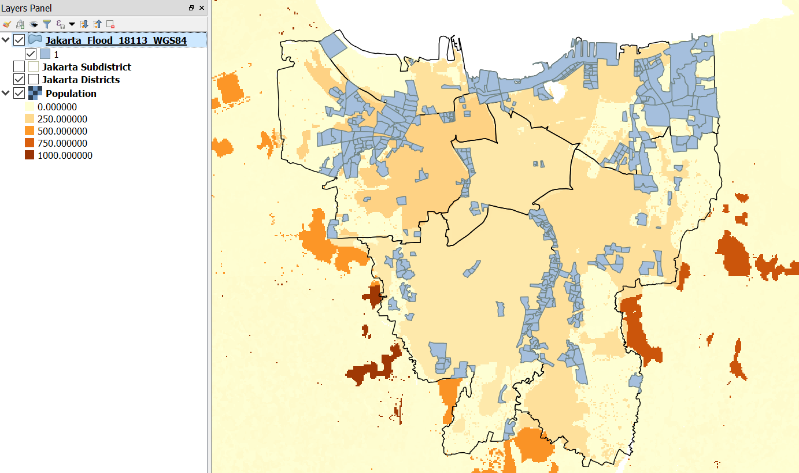Using this layer, we will be able to see which area in Jakarta are categorized as flooded/affected area by analysing the data using InaSAFE. On the InaSAFE Dock, you will notice that the hazard is not there and only exposure data (population) is visible, even though you already turned ON the data layer.
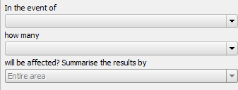Do you know why InaSAFE did not display the Jakarta Flood Vector Hazard data on the dock? The answer will be provided in the next section.
InaSAFE need a keyword to determine what type of data the user provide for analysis (hazard data, exposure data or aggregation data). If the data provided does not have a keyword, it will show a warning message “Layer Keyword Missing” in the InaSAFE Dock. Try selecting Jakarta_Flood_18113_WGS84 layer and look at the InaSAFE dock, You will see the following:
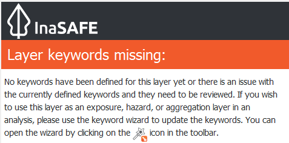As you can see from the picture above, this layer keywords are missing and we need to open the keyword wizard to solve this problem. The keywords wizard will take you through a step-by-step process of assigning keywords to your data.
Select Jakarta_Flood_18113_WGS84 layer and click Keyword Creation Wizard. A window will appear and follow the steps provided by the Keyword Creation Wizard. If you get stuck, you can follow the diagram below to understand the steps and the choices you will be offered.
Starting at the top of the diagram and working down; in the first step you will choose if your data are hazard, exposure or aggregation data. Your choice will determine the next options offered. You can always go back and change things later.
If you choose Hazard or Exposure, you will need to select the type of hazard or exposure. Next, you will choose whether the layer mode is continuous or classified (if you forget what Continuous or Classified means, you can reference the Key Concept of Disaster Management section). Both Hazard and Exposure types have the same step after you define the layer mode: defining which unit or attribute represents the hazard.
The steps will be different for aggregation data. After you define the data as aggregation data, you will select the attribute to represent the names of aggregation areas. After you select it, you will be asked to define the population ratio. Finally, you will need to enter the source of data and the name of your layer to be displayed in the InaSAFE dock.
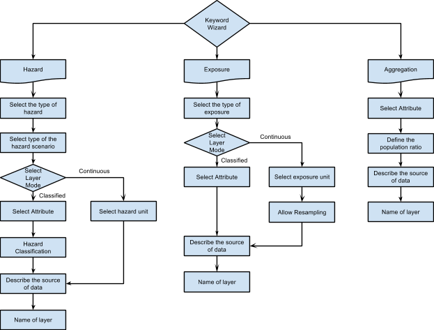 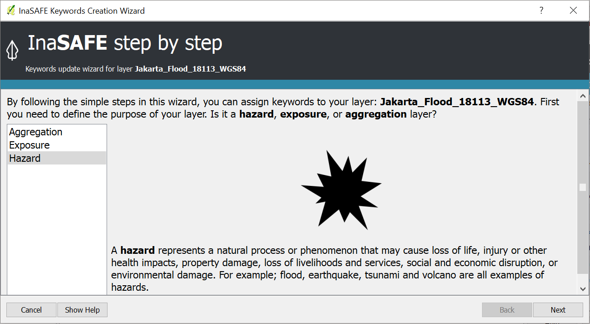After you set the keyword using the Keyword Wizard, you can see in the InaSAFE panel on the right side that the layer keyword has been set. Verify that it looks like the image below? If it does not, you should go back and try to define the keyword again.
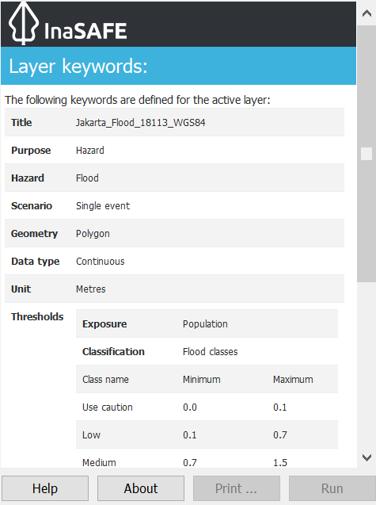After you set the keyword to match the image above, the hazard data will appear in the hazard panel of the InaSAFE Dock.
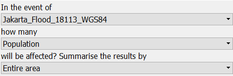Now all the keyword data has been set and we can move into the next section to run InaSAFE with population data.
We have seen the result of InaSAFE on buildings and populations with raster hazard data. Now we will run InaSAFE analysis using flood vector hazard data and raster population as exposure data. This time, however, we will use aggregated data. Using InaSAFE with aggregated data will help you to get detailed result since the aggregated data can provide detailed information on specific administrative (or other) area. InaSAFE allows us to add administrative data with specific boundaries that we can use to aggregate results.
To do this, look at the Layer List and make sure to turn ON the Jakarta District layer. Next, take a look at the InaSAFE dock under the heading Summarise the results by.
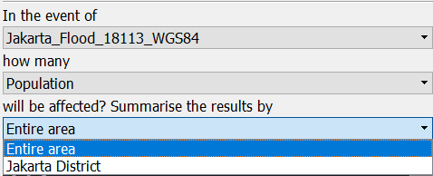Why are we not able to see the Jakarta District layer that we just turned ON before? Check the layer by selecting it on the Layer List. Did you see the keyword? The reason why this layer did not appear in the InaSAFE Dock is because it did not have keyword data defube. Go ahead and add a keyword for Jakarta District using the Keyword Creation Wizard. For your reference, refer to the keyword diagram as explained above.
Now you will able to select Jakarta District under ‘Summarise the results by’ in the InaSAFE Dock. The InaSAFE Dock should look like this:
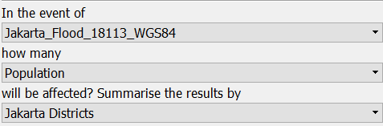Click Run and wait until InaSAFE finishes analysing the data. A new impact layer will be added to the Layer List. When you look at the result, it looks the same as InaSAFE analysis result without aggregation, but if you scroll down to the bottom you will see the detailed result. As explained before, using aggregation will let you get detailed information for a specific area or administration region.
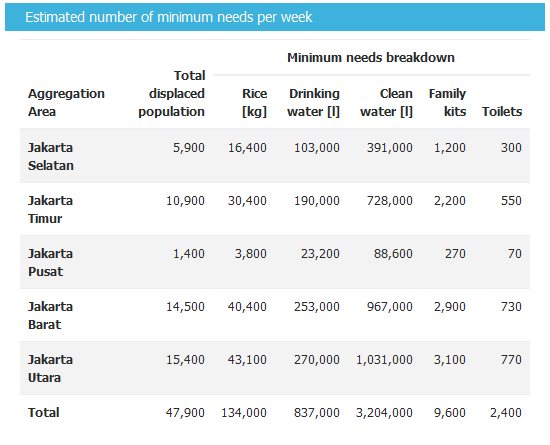In the screenshot above, we see detailed impact results for each district in Jakarta for the detailed minimum needs report. You can also use jakarta subdistrict rather than using jakarta_district for aggregation if you want to get more detailed results. Try running the analysis again using jakarta subdistrict. The aggregation option in InaSAFE can also be applied for buildings and roads (in addition to population). In the next exercise, we will learn to run InaSAFE for roads and buildings.
We have completed running InaSAFE with population and vector hazard data. Now, we will run InaSAFE with different type of vector exposure data: roads and buildings polygons. We will obtain these dataset using one of InaSAFE features, OpenStreetMap Downloader. OpenStreetMap Downloader is a feature that enables downloading OpenStreetMap data and directly loading it into QGIS. This feature requires an internet connection as it fetches the data via a web service. Once downloaded, the data will be available as shapefiles and symbolised neatly (more information at OpenStreetMap Downloader page).
To use this feature for our next exercise, follow these steps:
Zoom in to any flooded area that you prefer.
Click the OpenStreetMap Downloader icon.
Select Building Polygons and Roads as the feature types to download.
Click Drag on Map to select the boundary box from which data will be downloaded.
Choose your output directory, where OSM data will be stored. Adding a file name prefix makes it easier to identify the data downloaded.
Click OK.
It may take a while to download all the data in the given area based on how big the area is (generally dataset at city level and below should work well). After you download the data, a new layer will appear in the Layer List. The amount of data available depends on the OpenStreetMap data available in the downloaded region. If you want to get more data in your area, you can participate in OpenStreetMap and start map the area.
Since the data already downloaded, we are ready to run InaSAFE analysis. But can InaSAFE run the data for only the small part of the whole hazard data? We will find the answer in the next section.
InaSAFE has a feature that allows you specify exactly which area should be used for your analysis. If you have exposure data that is not the same size, you can use this feature to define your own analysis area.
Click Set Analysis Area to show set analysis extent feature.
Select Use intersection of hazard, exposure and this bounding box.
Click Drag on Map to draw the bounding box around building polygons and roads.
Click OK
Note
if you click Draw on Map, the window will be temporarily hidden so that you can drag a rectangle on the map. After you have finished dragging the rectangle, the window will reappear.
To verify that your analysis area has been successfully defined, click Toggle Scenario Outlines. A green box will appear around your data.
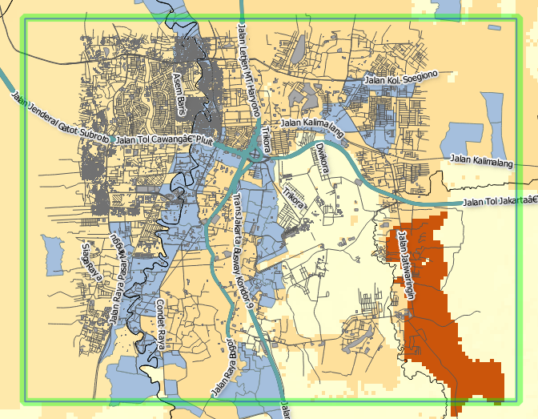Note
Using Toggle Scenario Outlines help you understand which area that InaSAFE will analyse. It is also an important step before running InaSAFE analysis because not all of the data you put in the Layer List will be automatically defined by InaSAFE.
Take a look at the InaSAFE panel dock to make sure building polygons and roads have a keyword defined. If they do not you can define one using InaSAFE Keyword Wizard. After the keyword has been already set, we are ready to run InaSAFE for building polygons and roads.
Let us run analysis for building polygons first. Make sure you set the InaSAFE dock as pictured below:
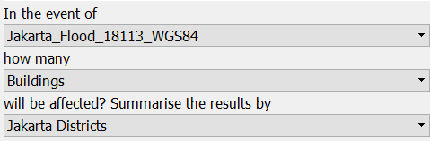We will run InaSAFE for flood vector hazard and building polygons with data aggregated by Jakarta district Click Run to begin InaSAFE analysis. After running, you will find the impact result layer in Layer List.
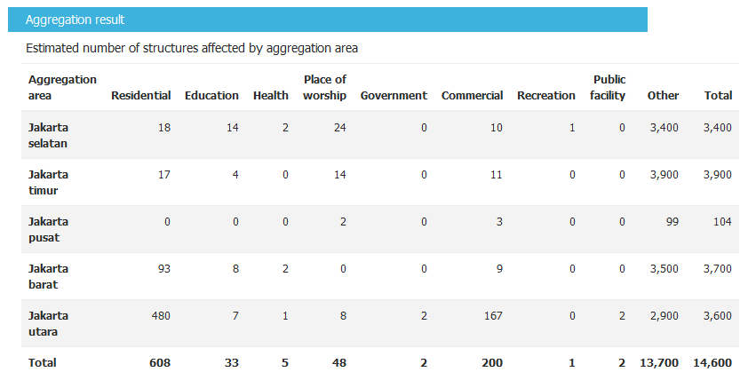Look at the Detailed building type report (picture above) it shows that five districts in Jakarta are affected by flood. Your results may vary since it depend on the analysis area selected and also the aggregation layer that you used for analysis.
InaSAFE did not separate the impact result into three categories as in the Run Basic InaSAFE because in the previous exercise we used raster data containing information of flood depth in each pixel yet in this exercise, the hazard data that we use only depicts affected areas. Therefore, InaSAFE will calculate how many buildings are inside the affected area but not level of impact on each building.
We just succeeded running InaSAFE on flood vector hazard with building polygon. Next, we will run InaSAFE for roads. What are the results that you expect to get when you run InaSAFE for roads?
In this last exercise, we will run InaSAFE on roads data that we previously downloaded from OpenStreetMap. Make sure that you select roads as exposure data in the InaSAFE dock, as shown in the screenshot below:
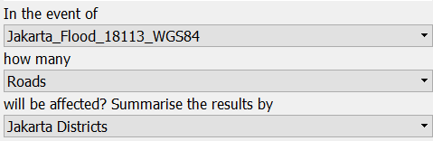Click Run to start InaSAFE analysis. A new impact layer will be added to your Layer List and in the map canvas you will see green roads as not flooded and red as flooded. Select the Flooded roads layer to see statistics from the InaSAFE analysis.
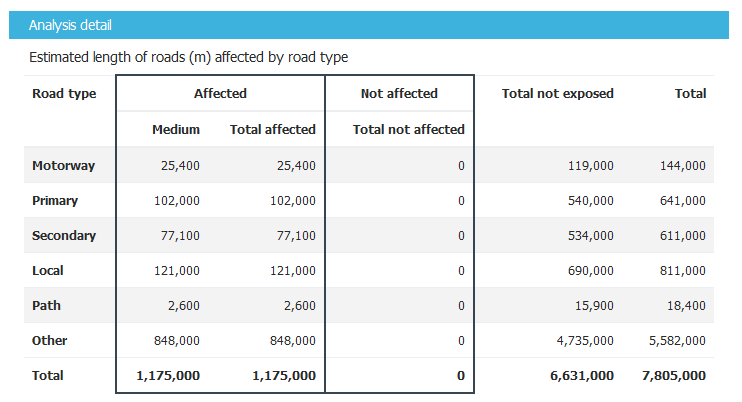In this analysis, InaSAFE will generate statistics on how many roads are temporarily closed in the affected area and also a breakdown of the result by road type. If you are using aggregation, there will be detailed results for each aggregation. In the action checklist, you will see several questions that can be used for points of discussion related to road impact, and disaster logistics planning, for example: Which roads can be used to evacuate people or to distribute logistics?
In this exercise, you have learned how to run InaSAFE analysis with different hazard data formats and with new type of exposure data. You have also learned two fundamental steps to remember before you run InaSAFE:
First, you learned how to define a keyword for your data so it can be analysed with InaSAFE. Without a keyword, InaSAFE will not recognize your data, so you need to define it whether the data is hazard, exposure or aggregation data. You can set the keyword using the Keyword Creation Wizard feature.
Second, it is important to review the analysis area using Toggle Scenario Outline before you run InaSAFE analysis. This is because, InaSAFE sometimes does not automatically set the analysis area according to the intersection of hazard and exposure data. If InaSAFE did not set the analysis area, you need to define it manually using the Set Analysis Area feature.
In this exercise, you have learned how to download buildings and roads data from OpenStreetMap using OpenStreetMap Downloader. With this feature you can define the size of the area and what type of data you want to download. The availability of the data depends on how complete the data are in OpenStreetMap.
In the next section, you will learn how to run InaSAFE with other type of hazard data such as tsunami, earthquake, volcano and generic data.
{kind=link}
{kind=link}
{kind=link}
{kind=link}
{kind=link}
{kind=link}
{kind=link}
{kind=link}
{kind=link}
{kind=link}
{kind=link}
{kind=link}
{kind=link}
{kind=link}
{kind=link}
{kind=link}
{kind=link}
{kind=link}